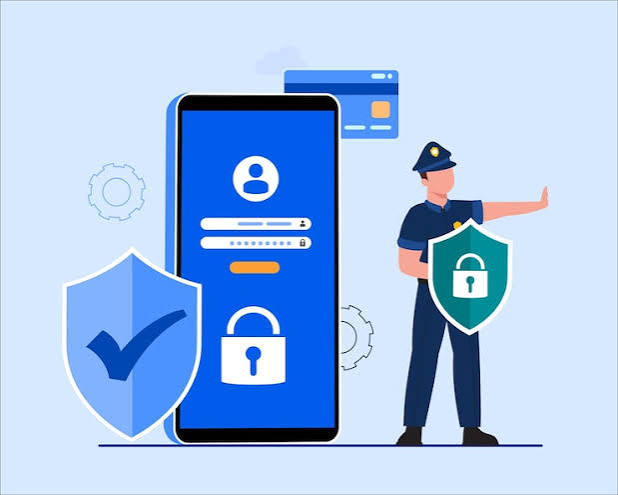

Bienvenido
Aprende cómo proteger tu información en Internet.

¿Qué es la seguridad informática?
Es la protección de nuestros datos, dispositivos y cuentas digitales.
Su objetivo es evitar robos de información y accesos no autorizados.
Consejos de seguridad
- Usa contraseñas seguras.
- No compartas tus datos personales.
- No abras enlaces desconocidos.
- Mantén tus dispositivos actualizados.
¿Por qué es importante?
La seguridad informática es importante porque protege nuestra información personal y evita diferentes amenazas digitales.
Recuerda
Navega con cuidado y protege siempre tus datos personales.